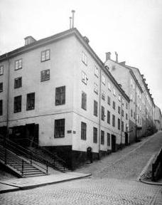
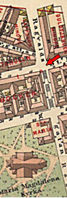
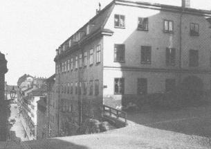

|
 
Hörnet Brännkyrkagatan 13/ Ragvaldsgatan 4. I bakgrunden Brännkyrkagatan 15.
År 1904.

 1910. Brännkyrkagatan 15 i hörnet av Maria Trappgränd från väster. Husdelen till höger om portgången byggdes ca 1740. Hörndelen vid Brännkyrkagatan är från 1762. I förlängningen av detta hus utfördes år 1785 en omfattande tillbyggnad åt Brännkyrkagatan. 1910. Brännkyrkagatan 15 i hörnet av Maria Trappgränd från väster. Husdelen till höger om portgången byggdes ca 1740. Hörndelen vid Brännkyrkagatan är från 1762. I förlängningen av detta hus utfördes år 1785 en omfattande tillbyggnad åt Brännkyrkagatan.
|
|

Hörnpartiet av huset uppfördes 1760 med utnyttjande av äldre murar
från 1730-talet. Tillbyggt västerut 1819. År 1837 byggdes huset på med två
våningar, torkbottnar för det sockerbruk som funnits i huset sedan 1700-talets
mitt. År 1858 byggdes huset om till bostäder. Idag finns här lokaler för konstnärer. |